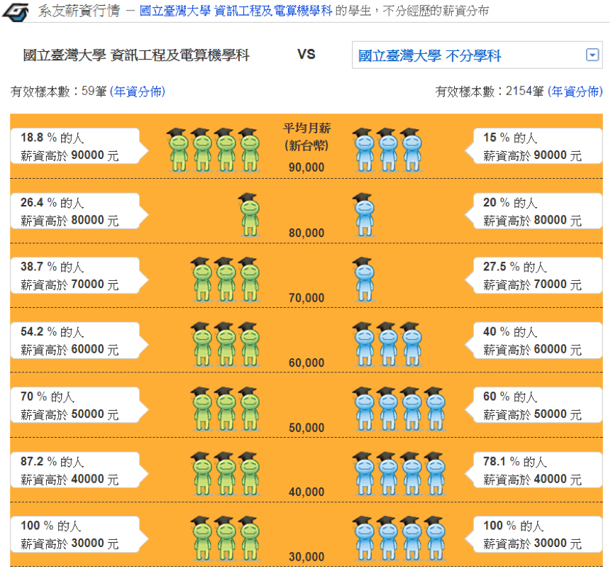

Uh~Oh~ 您的IE瀏覽器已經過時囉～
本網站不再支援Internet Explorer 9以下版本，請立即更換瀏覽器！
我們建議您改用以下瀏覽器:
Mozilla Firefox
Google Chrome
升大學職涯型
落點分析
校系CP值分析
請選擇你要查看的資料
分析方法
一般分類
學校
科系
學群
依學群分
工程學群
資訊學群
管理學群
財經學群
建築與設計學群
外語學群
數理化學群
醫藥衛生學群
生命科學學群
生物資源學群
地球與環境學群
藝術學群
社會與心理學群
大眾傳播學群
文史哲學群
教育學群
法政學群
遊憩與運動學群
學校CP值分析
最高前十名
科系CP值分析
最高前十名
學群CP值分析
學類CP值分析
最高前十名
工程學群CP值分析
最高前十名
資訊學群 CP值分析
最高前十名
管理學群 CP值分析
最高前十名
財經學群 CP值分析
最高前十名
建築與設計學群 CP值分析
最高前十名
外語學群 CP值分析
最高前十名
數理化學群 CP值分析
最高前十名
醫藥衛生學群 CP值分析
最高前十名
生命科學學群 CP值分析
最高前十名
生物資源學群 CP值分析
最高前十名
地球與環境學群 CP值分析
最高前十名
藝術學群 CP值分析
最高前十名
社會與心理學群 CP值分析
最高前十名
大眾傳播學群 CP值分析
最高前十名
文史哲學群 CP值分析
最高前十名
教育學群CP值分析
最高前十名
法政學群CP值分析
最高前十名
遊憩與運動學群CP值分析
最高前十名
分析結果僅供參考， 薪資資料來源:
104升學就業地圖 - 系友薪資行情
校系CP值分析方法
一、資料來源
薪資資料:
104升學就業地圖-系友薪資行情
薪資資料更新時間: 2017/07/11
指考分數:
大學考試入學分發委員會官網
科系資料
以105學年度指考校系分則中的校系為基礎
刪除106學年度停招的校系
刪除104系友薪資行情調查樣本不足的校系
共1138個校系
二、平均薪資計算
將(薪資級距x該級距人數百分比)加總
舉例: 臺灣大學資訊工程系平均薪資 =
$90000 x 18.8% +
$80000 x (26.4% - 18.8%) +
$70000 x (38.7% - 26.4%) +
$60000 x (54.2% - 38.7%) +
$50000 x (70% - 54.2%) +
$40000 x (87.2% - 70%) +
$30000 x (100% - 87.2%) +
=
$59530

三、平均分數計算
最低錄取分數/採計科目加權總計
舉例:臺灣大學資訊工程系
採計及加權: 國x1, 英x1, 數甲x1, 物x1, 化x1
105學年度最低錄取分數 = 415.7
平均分數(還原單科分數) = 415.7/(1+1+1+1+1) =
83.14
四、CP值計算
將平均薪資及平均分數正規化
消除薪資和分數數值範圍以及分佈不一致的問題
C=平均薪資之百分比排名(百分位數)
P=平均分數之百分比排名(百分位數)
CP = 薪資百分比排名(C) - 分數百分比排名(P)
舉例:臺灣大學資訊工程系
在1138個校系當中
平均薪資勝過1112個校系: C=1112/1138=97.72%
平均分數勝過1115個校系: P=1115/1138=97.98%
CP = 97.72 - 97.98 = -0.26
五、校系CP值排名
第一優先: CP值由大到小排序
第二優先: 平均薪資由大到小排序
第三優先: 平均分數由小到大排序
研究資料
×
開發團隊
指導教授：曾秋蓉
前端程式：邱迺元/溫宏洋
後端程式：林廣學
資料收集：張修輔
資料分析：邱孅平
資料探勘：陳品甄
資料整理：詹佳叡
×
聯絡我們
聯絡人: 中華大學資訊工程系曾秋蓉教授
Email:
judycrt@chu.edu.tw
TEL:
0989090565
/
03-5186383
×